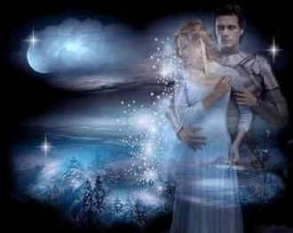
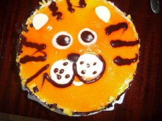
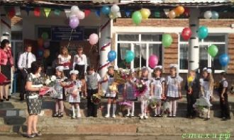
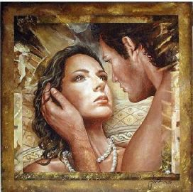

Где волной серебрится пространство,Разливая по ночи лазурь,
мы многих в жизни уважаем и многих любим от души,
Пьяна багряной осени любовью,Лучом скольжений таял стрелок ход,
Ты не внял бы меня, другую,
моя любимая девчонка,
хочу тебе я предложить,
чтоб стала ты моей женою,
хочу с тобою жизнь прожить.
ты для меня,как свет в окошке,
Чем проще человек, сложнее чувства,
Приют одинокой волчицы,
Лунный свет ласкает трепетной вуалью,Вовлекает в магию деревьев фон,

Лунная Мелодия, звездный миг двоих,Две звезды взошли на небе для любви,
Даже, если устал и молчишь,

21.08.2014г.
19.29ч.
Мой любимый, ненаглядный принц,
Скромный мой мужчина несравненный,

Здравствуйте! Хорошие!Добрый день, ребята!Школа вас встречает!Школа всем вам рада!
Я живу в бесконечном приливе,Тем, который лежит в глубине,
12.05.11г.
08.25ч.
Неврологический центр,
палата №202

Быть в плену у любви непросто,У свободы море красот,
Первый куплет.
Подари мне из звезд букет.
Расцветет он любовью в сердце.
Слышу шум далеких планет….
Ты разбудил во мне весну.
Она давно в душе спала.
Шепни: «люблю тебя одну»,
Чтоб жизнь вновь смысл приобрела.
Мы не расстанемся, родной.
Любовь – сильнее, чем невзгоды.
Останусь навсегда с тобой!
Не испугаюсь непогоды.
Симпатичная девчонка -
Воплощенная мечта,
Ты души моей потемки
Озарила, как звезда.
Возродила веру в чудо,
Подарила красоту.
Конец апреля, день мог быть обычным,
Но нет. Он подарил нам человека,
И это имя, голос мелодичны –